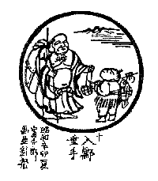

BuddhaSasana Home Page
This document is written in Vietnamese, with Unicode Times
font
 Dẫn
Ðóng cánh cửa gỗ ngàn Thánh chẳng biết. Vùi phong quang chính mình, phụ lối mòn của bậc hiền trước. Mang bầu vào chợ, mang gậy vào nhà. Quán rượu hàng cá chuyển thành Phật Ðạo.
Giảng Giải
Ðóng cánh cửa gỗ ngàn Thánh chẳng biết: Sau khi vào Phật giới, hành giả sửa soạn để vào ma giới là đóng cửa am, xuống núi đi vào xóm làng chợ búa. Việc làm này, chỉ tự biết chớ không ai biết được, cho tới Thánh cũng không biết nữa. Vùi phong quang chính mình, phụ lối mòn của bậc hiền trước: Tuy đã giác ngộ sáng suốt mà tự ẩn mình, không để cho người biết mình là người tu đã ngộ đạo. Xưa, các bậc Hiền đã ngộ đạo rồi thì làm mẫu mực để giáo hóa chỉ dậy tín đồ, tăng ni. Ngược lại, ở đây Thiền Sư lại bỏ hình tướng của người tu thanh tịnh mà đi vào xóm làng làm con người rất tầm thường, không theo gương người xưa làm mẫu mực cho đời, để mang bầu vào chợ, mang gậy vào nhà. Quán rượu hàng cá chuyển thành Phật Ðạo: Bấy giờ Thiền Sư vào quán rượu không phải để uống rượu, lại hàng cá không phải để mua cá, mà để gần gũi giúp đỡ, hướng dẫn người uống rượu, người bán cá về với Ðạo. Chấp nhận hình ảnh xấu xa tầm thường để đưa người đến với Ðạo là hành động tích cực của người tu Thiền. Tinh thần tích cực của Phật Giáo là không riêng nhận sự an lạc cho bản thân, mà tự che khuất mình bằng cách giả dạng con người rất tầm thường, đi vào chỗ tầm thường, để gần gũi người tầm thường thiếu đạo đức, chuyển họ về với Ðạo.
Tụng
Lộ hung tiễn túc nhập trần lai
Phù thổ đồ khôi tiếu mãn tai
Bất dụng thần tiên chơn bí quyết
Trực giao khô mộc phóng hoa khaiDịch
Chân trần bày ngực thẳng vào thành
Tô đất trét bùn nụ cười thanh
Bí quyết thần tiên đâu cần đến
Cây khô cũng khiến nở hoa lànhGiảng Giải
Thiền Sư mặc áo bày ngực, chân không dày dép đi vào chợ để làm những việc rất tầm thường như người đời. Miệng cười hỉ hạ tới mép tai, không cần gìn giữ giới hạnh mẫu mực của người tu, không thuyết giảng giáo lý cao sâu mầu nhiệm, chỉ làm con người rất bình thường để dạy cho những người bán cá, bán thịt ở ngoài chợ, ở quán rượu, là những con người không có chút đạo đức, khiến cho họ có chút đạo đức biết tu hành. Ðó là trọng trách giáo hóa của người tu đã đến chỗ viên mãn. Chỗ này là chỗ thiết yếu, hành giả cần phải hiểu cho rõ, người tu sau khi vào cảnh giới Phật tức là đã triệt ngộ, rồi mới vào cảnh giới ma để lăn xả vào đời, làm lợi ích cho đời.
Nếu chưa ngộ, chưa vào cảnh giới Phật mà vào cảnh giới ma, tự mình đã không tu tiến mà cũng không làm lợi ích cho người được, thì chắc chắn sớm muộn gì thì cũng thành ma. Ðừng nghe loáng thoáng, hiểu lờ mờ rằng mỗi người ai cũng có Phật Tánh, cho rằng mình cũng có ông Phật rồi tùy ý phóng đãng, ăn nhậu, chơi bời làm chuyện tội lỗi, thì sẽ rơi vào địa ngục như tên bắn. Vì vậy, học là phải hiểu cho chính chắn, cho thấu suốt để tu tập không sai lầm, và tu đến nơi đến chốn.
[Lời Tựa]
Tranh Thiền Tông: [1] [2] [3] [4] [5] [6]
[7] [8] [9] [10]